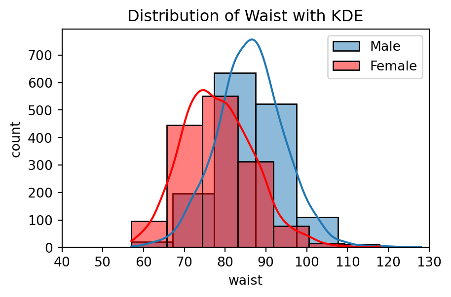
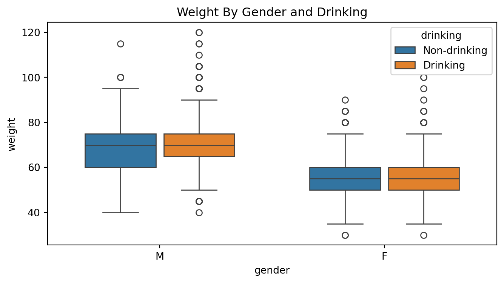
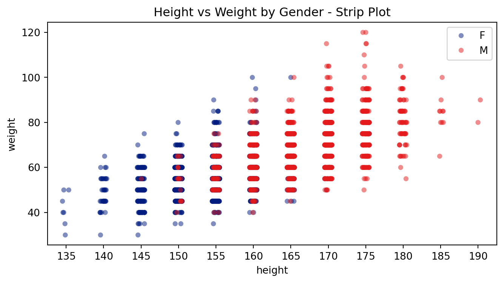

# Seaborn 라이브러리 설치
#!pip install seaborn
- Seaborn
6.1. Seaborn
- Seaborn
- Matplotlib 라이브러리를 기반으로 개발된 고급 통계 데이터 시각화 라이브러리
- 다양한 테마와 통계 그래프를 지원하며, 시각적으로 세련된 그래프를 쉽게 생성할 수 있음
- Matplotlib 라이브러리에 의존하므로, 사용 시 함께 불어와야 함
| 주요 특징 | 시각화 단계 |
|---|---|
| - 뛰어난 시각화 효과 - 간결한 구문 제공 - Pandas 데이터프레임에 최적화 - 쉬운 데이터프레임 집계 및 그래프 요약 |
- 데이터 준비 - 배경 설정 - 시각화 - 개별 그래프 상세 설정 |
6.2. 기본 시각화 유형
- [데이터] 공공데이터포털에서 제공하는 2020년 국민건강보험공단 건강검진 정보
- gender, height, weight, waist, smoking, drinking 등 18개 변수
- [실습파일] 05_data1.csv
# Seaborn 라이브러리 불러오기
import matplotlib.pyplot as plt
import seaborn as snsimport numpy as np
import pandas as pd# 데이터 불러오기
data = pd.read_csv('./data/05_data1.csv')
data.head()| no | city_code | gender | age_code | height | weight | waist | systolic | diastolic | blood_sugar | cholesterol | triglycerides | HDL | LDL | hemoglobin | serum | smoking | drinking | |
|---|---|---|---|---|---|---|---|---|---|---|---|---|---|---|---|---|---|---|
| 0 | 1 | 36 | 1 | 9 | 165 | 60 | 72.1 | 127 | 79 | 90 | 188 | 58 | 58.0 | 118 | 15.0 | 1.1 | 1 | 0 |
| 1 | 5 | 41 | 2 | 12 | 155 | 50 | 75.2 | 144 | 89 | 110 | 220 | 171 | 53.0 | 133 | 12.4 | 0.7 | 1 | 0 |
| 2 | 6 | 27 | 1 | 9 | 185 | 85 | 94.0 | 114 | 72 | 86 | 234 | 183 | 50.0 | 147 | 16.4 | 1.1 | 3 | 1 |
| 3 | 7 | 44 | 1 | 9 | 165 | 80 | 93.0 | 112 | 73 | 250 | 119 | 265 | 26.0 | 40 | 15.7 | 0.7 | 3 | 1 |
| 4 | 9 | 41 | 2 | 17 | 150 | 50 | 82.0 | 136 | 65 | 104 | 177 | 61 | 63.0 | 101 | 13.3 | 0.7 | 1 | 0 |
# 데이터 전처리 : 라벨 매핑(label mapping)
data6 = data.copy()
data6 = data6.loc[:, ['gender', 'height', 'weight', 'waist', 'drinking', 'smoking']]
data6['gender'] = data['gender'].replace({1: 'M', 2: 'F'})
data6['drinking'] = data['drinking'].replace({0: 'Non-drinking', 1: 'Drinking'})
data6['smoking'] = data['smoking'].replace({1: 'Non-smoking', 2: 'Quit-smoking', 3: 'Smoking'})
data6.head()| gender | height | weight | waist | drinking | smoking | |
|---|---|---|---|---|---|---|
| 0 | M | 165 | 60 | 72.1 | Non-drinking | Non-smoking |
| 1 | F | 155 | 50 | 75.2 | Non-drinking | Non-smoking |
| 2 | M | 185 | 85 | 94.0 | Drinking | Smoking |
| 3 | M | 165 | 80 | 93.0 | Drinking | Smoking |
| 4 | F | 150 | 50 | 82.0 | Non-drinking | Non-smoking |
# 데이터 집계 :성별 음주 여부별 빈도
drinking = data6.groupby(['gender', 'drinking'])['drinking'].count()
drinking = drinking.to_frame(name='count')
drinking = drinking.reset_index()
drinking| gender | drinking | count | |
|---|---|---|---|
| 0 | F | Drinking | 611 |
| 1 | F | Non-drinking | 888 |
| 2 | M | Drinking | 1086 |
| 3 | M | Non-drinking | 415 |
# 데이터 집계 :성별 흡연 상태별 빈도
smoking = data6.groupby(['gender', 'smoking'])['smoking'].count()
smoking = smoking.to_frame(name='count')
smoking = smoking.reset_index()
smoking| gender | smoking | count | |
|---|---|---|---|
| 0 | F | Non-smoking | 1422 |
| 1 | F | Quit-smoking | 45 |
| 2 | F | Smoking | 32 |
| 3 | M | Non-smoking | 502 |
| 4 | M | Quit-smoking | 519 |
| 5 | M | Smoking | 480 |
# 막대 그래프 : 성별에 따른 음주 여부, 흡연 상태 분포
fig = plt.figure(figsize=(8, 4))
area1 = fig.add_subplot(1, 2, 1)
area2 = fig.add_subplot(1, 2, 2)
ax1 = sns.barplot(x='gender', y='count', hue='drinking', data=drinking, ax=area1)
ax2 = sns.barplot(x='gender', y='count', hue='smoking', data=smoking, ax=area2)
fig.suptitle('2020 Health Check Drinking & Smoking Type by Gender', fontweight='bold')
area1.set_title('Drinking Type')
area2.set_title('Smoking Type')
plt.tight_layout(rect=[0, 0, 1, 0.99])
plt.show()
# 데이터 전처리
maledata = data6.copy()
maledata = maledata.loc[maledata['gender']=='M',:]
femaledata = data6.copy()
femaledata = femaledata.loc[femaledata['gender']=='F',:]# 히스토그램 : 성별에 따른 몸무게 분포
plt.figure(figsize=(5, 3))
sns.histplot(maledata['weight'], bins=8, alpha=0.5, label='Male')
sns.histplot(femaledata['weight'], bins=8, alpha=0.5, label='Female', color='r')
plt.xlim(20, 130)
plt.xlabel('Weight')
plt.ylabel('Count')
plt.title('Distribution of Weight')
plt.legend()
plt.show()
# 히스토그램 & 커널 밀도 추정(KDE) : 성별에 따른 허리둘레 분포
plt.figure(figsize=(5, 3))
sns.histplot(maledata['waist'], bins=7, alpha=0.5, label='Male', kde=True)
sns.histplot(femaledata['waist'], bins=7, alpha=0.5, label='Female', color='r', kde=True)
plt.xlim(40,130)
plt.xlabel('Waist')
plt.ylabel('Count')
plt.title('Distribution of Waist with KDE')
plt.legend()
plt.show()
# 상자수염 그래프 : 성별 및 음주 여부에 따른 몸무게 분포
plt.figure(figsize=(8, 4))
plt.title('Weight By Gender and Drinking')
sns.boxplot(x='drinking', y='weight', hue='gender', width=0.5, data=data6)
plt.show()
# 상자수염 그래프 : 성별 및 흡연 상태에 따른 몸무게 분포
plt.figure(figsize=(8, 6))
plt.title('Weight By Gender and Drinking')
sns.boxplot(x='weight', y='smoking', hue='gender', width=0.5, data=data6, orient='h')
plt.show()
6.3. 고급 시각화 유형
| 시각화 유형 | 설명 |
|---|---|
| 스트립 플롯 (strip plot) |
- 데이터 분포를 요약하여 간략히 띠 형태로 시각화함 - 일반적으로 x축에는 범주형 변수, y축에는 수치형 변수를 지정함 - 주로 데이터 수가 적을 때 사용됨 |
| 스웜 플롯 (swarm plot) |
- 스트립 플롯과 유사하지만, 점들을 겹치지 않도록 자동으로 위치를 조정함 - 분포를 보여줄 때 효과적이나, 데이터 수가 많을 때에는 개수를 대략적으로 파악하기 어려움 |
| 카운트 플롯 (count plot) |
- 범주형 변수의 각 항목별 빈도를 막대 그래프로 표현함 - 데이터의 범주별 분포를 직관적으로 파악할 수 있음 |
| 바이올린 플롯 (violin plot) |
- 커널 밀도 추정(KDE)을 이용하여 데이터의 분포를 시각화함 - 상자수염 그래프와 KDE를 결합한 형태로 중앙값, 사분위수, 전체 분포를 동시에 보여줌 - 분포를 비교하는 데 효과적이나, 데이터 수가 적을 경우 왜곡된 해석 가능성 있음 |
| 히트맵 (heatmap) |
- 행과 열로 이루어진 2차원 행렬 데이터를 색상으로 시각화함 - 두 범주형 변수 간의 관계나 상관관계를 나타낼 때 사용 - 색상의 강도를 통해 값의 크기를 비교할 수 있음 - 예 : 상관행렬, 교차표 등 |
# 스트립 플롯
plt.figure(figsize=(8, 4))
plt.title('Height vs Weight by Gender - Strip Plot')
sns.stripplot(x='height', y='weight', hue='gender', alpha=0.5, palette='dark', data=femaledata)
sns.stripplot(x='height', y='weight', hue='gender', alpha=0.5, palette='Set1', data=maledata)
plt.legend()
plt.show()
# 데이터 전처리
maledata100 = maledata.head(100)
femaledata100 = femaledata.head(100)# 스웜 플롯
plt.figure(figsize=(8, 4))
plt.title('Height vs Weight by Gender - Swarm Plot')
sns.stripplot(x='height', y='weight', hue='gender', alpha=0.5, palette='dark', data=femaledata100)
sns.stripplot(x='height', y='weight', hue='gender', alpha=0.5, palette='Set1', data=maledata100)
plt.legend()
plt.show()
# 카운트 플롯1 : 음주 여부에 따른 성별 분포
plt.figure(figsize=(5, 3))
plt.title('Gender and Drinking')
sns.countplot(x='drinking', hue='gender', data=data6)
plt.show()
# 카운트 플롯2 : 흡연 상태에 따른 성별 분포
plt.figure(figsize=(5, 3))
plt.title('Gender and Smoking')
sns.countplot(y='smoking', hue='gender',
data=data6, order=['Smoking', 'Quit-smoking', 'Non-smoking'])
plt.show()
# 바이올린 플롯1 : 성별 및 음주 여부별 몸무게(120 미만) 분포
plt.figure(figsize=(5, 3))
plt.title('Weight By Gender and Drinking (Under 120kg)')
sns.violinplot(x='gender', y='weight', hue='drinking', data=data6[data6.weight<120])
plt.show()
# 바이올린 플롯2 : 성별 및 음주 여부별 허리둘레(150 미만) 분포
plt.figure(figsize=(5, 5))
plt.title('Waist By Gender and Drinking (Under 150cm)')
sns.violinplot(y='gender', x='waist', hue='drinking', data=data6[data6.waist<150])
plt.show()
# 데이터 전처리
data8 = data.copy()
data8 = data8.loc[:,['height', 'weight', 'waist', 'systolic', 'diastolic', 'cholesterol', 'HDL', 'LDL']]# 히트맵 : 상관행렬
correlation_data8 = data8.corr()
upp_mat = np.triu(correlation_data8)
plt.figure(figsize=(8, 6))
plt.title('Correlation Heatmap')
sns.heatmap(correlation_data8, annot=True, cmap='seismic', mask=upp_mat, vmin=-1, vmax=1)
plt.show()